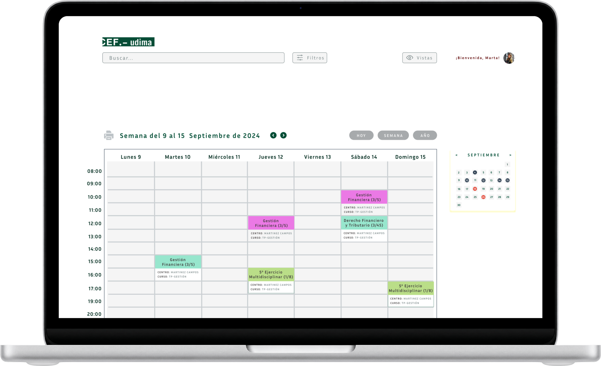
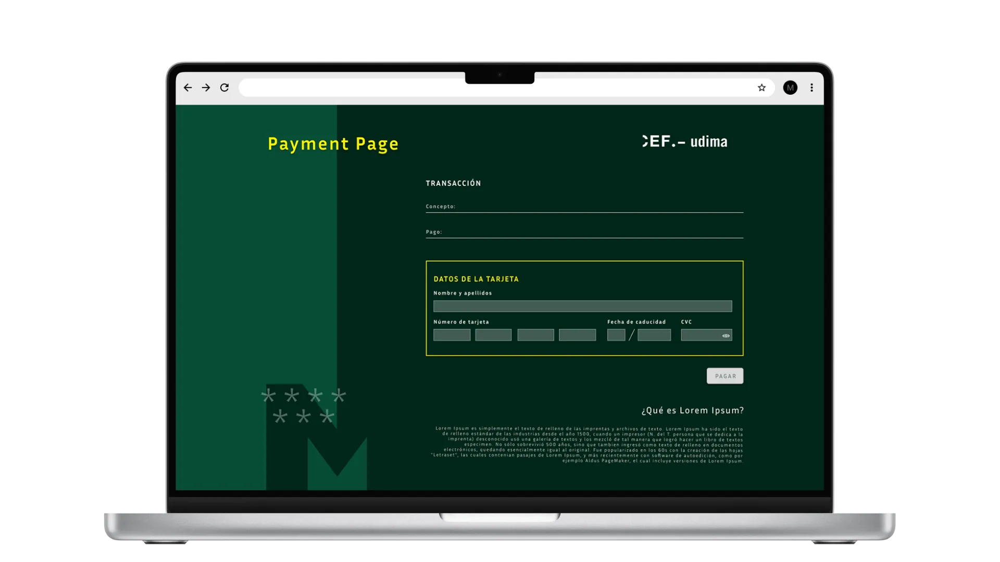
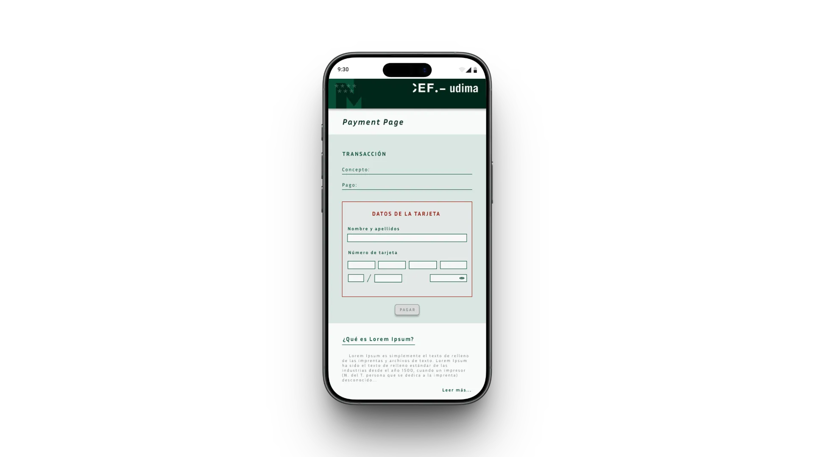

CEF EdTech · Design System & AccesibilidadDesign System & Accessibility
Construir un sistema de diseño desde cero: deuda visual, tokens y WCAG AABuilding a design system from zero: visual debt, tokens & WCAG AA
Cómo convertí años de inconsistencia y contrastes por debajo de 3:1 en una arquitectura unificada de tokens, componentes modulares y hand-off ágil para desarrollo.How I turned years of visual debt and sub-3:1 contrast into a unified token architecture, modular components, and seamless developer hand-off.

RolRole
Solo Product DesignerSolo Product Designer
EquipoTeam
Yo + Frontend + ProductoMe + Frontend + Product
DuraciónTimeline
4 meses4 months
HerramientasTools
Figma · Tokens Studio · Stark · Claude MCP
PlataformaPlatform
Web Desktop & Mobile · EdTech
01TL;DR
El caso en 30 segundosThe case in 30 seconds
ProblemaProblem
Deuda visual acumulada y nula accesibilidadAccumulated visual debt & zero accessibility
Cada módulo se diseñaba y desarrollaba de forma aislada: contrastes ilegibles (< 3:1) y componentes duplicados en código.Each module was built in silos: illegible contrast (< 3:1) and duplicated frontend code.
SoluciónSolution
Sistema de diseño atómico con tokens semánticosAtomic design system with semantic tokens
Estandarización de 40+ componentes, sistema tipográfico modular y cumplimiento estricto de WCAG 2.1 nivel AA.Standardization of 40+ components, modular typography, and strict WCAG 2.1 AA compliance.
ImpactoImpact
100%AA
Conformidad WCAG AA alcanzada en flujos críticos · Reducción radical del tiempo de hand-off a desarrollo.WCAG AA compliance achieved on key flows · Drastic reduction in design-to-code hand-off time.
02Contexto y problemaContext & problem
Resolver la interfaz pantalla a pantalla no escalaSolving interfaces screen by screen doesn't scale
El Centro de Estudios Financieros contaba con múltiples plataformas digitales (Campus virtual, Bolsa de empleo, Pasarela de matriculación y Calendario académico) construidas a lo largo de los años por diferentes proveedores. El resultado era una experiencia fragmentada, con ratios de contraste inaccesibles y componentes que se reinventaban con cada nuevo requerimiento.CEF had multiple digital platforms built over the years by different teams. The result was a fragmented student experience, inaccessible contrast ratios, and components constantly reinvented for every new feature.
Requisitos imprescindiblesHard requirements
Superar la auditoría legal de accesibilidad (WCAG 2.1 AA)Pass legal accessibility audit (WCAG 2.1 AA)
Arquitectura de tokens sincronizada entre Figma y FrontendToken architecture synced between Figma and code
Funcionar sin fisuras en Desktop y navegación MobileFlawless responsive behavior across desktop & mobile
Documentación clara de estados (hover, focus, disabled, active)Exhaustive documentation of states (hover, focus, disabled)
Mi enfoque de sistemasMy systems mindset
Un sistema de diseño no es un catálogo estético de botones; es un contrato operativo entre diseño, accesibilidad y desarrollo que permite a la organización escalar producto con consistencia sin depender de decisiones subjetivas.A design system is not an aesthetic catalog; it is an operational contract between design, accessibility, and engineering that allows teams to scale consistently.
14 Plataformas
14 plataformas educativas desincronizadas y sin tokens compartidos14 fragmented educational platforms without shared design tokens
Patrones de fricción detectadosDetected friction patterns
Inconsistencia visual severa entre campus virtual y portalesSevere visual fragmentation between LMS and web portals
Duplicidad de esfuerzo en desarrollo (45% más tiempo)Duplicated frontend effort (45% longer turnaround time)
Incumplimiento de accesibilidad WCAG AA en formularios claveFailed WCAG AA accessibility compliance on core forms
Cada squad reinventaba componentes básicos sin jerarquía ni tokens semánticos.Every squad was reinventing basic UI elements without semantic tokens.
DecisiónDecision
Diseñar un sistema de diseño desde cero con 80+ componentes y gobernanza en Figma y código.Build an end-to-end design system with 80+ components and token governance.
03ObjetivosGoals
Negocio y DesarrolloBusiness & Dev
Acelerar el ciclo de entrega de nuevas funcionalidadesAccelerate delivery time for new features
Cumplir la normativa legal de accesibilidad para educaciónComply with legal accessibility mandates in education
Estudiante y UsabilidadStudents & Usability
Lectura sin fatiga y jerarquía clara en trámites críticosEffortless reading & hierarchy on critical flows
Navegación cómoda con teclado y lectores de pantallaComfortable keyboard and screen reader navigation
04Auditoría e investigaciónAudit & Research
Diagnóstico con datos: auditoría de accesibilidadData-driven diagnosis: accessibility audit
Textos secundarios y botones críticos fallaban el contraste mínimo de 4.5:1 exigido por WCAG AA.Secondary copy and primary buttons failed minimum 4.5:1 contrast ratios.
02
Componentes duplicadosComponent duplication
Existían más de 8 variaciones distintas de botones y campos de formulario en producción.Over 8 inconsistent variants of buttons and inputs were active in production.
03
Navegación por teclado rotaBroken keyboard navigation
Los estados de foco (:focus-visible) estaban suprimidos, impidiendo la navegación accesible.Focus rings (:focus-visible) were removed, breaking accessible keyboard flows.
“Diseñar para la accesibilidad no limita la creatividad; impone un rigor que beneficia a todos los usuarios, no solo a quienes usan tecnologías asistivas.”“Designing for accessibility doesn't limit creativity; it demands rigor that benefits every user.”
Copiloto IA · Aceleración con Claude & Figma MCPAI co-pilot · Acceleration with Claude & Figma MCP
Utilicé Claude con Figma MCP para mapear automáticamente la paleta completa de tokens y generar la matriz de contrastes WCAG en minutos. La automatización aceleró la auditoría mecánica para centrarme en la toma de decisiones.I used Claude with Figma MCP to map color tokens and generate the WCAG contrast matrix in minutes, speeding up routine audits so I could focus on high-impact decisions.
05Arquitectura del sistemaSystem Architecture
De la tokenización a la experiencia finalFrom tokenization to the final interface
Antes / despuésBefore / afterCalendario AcadémicoAcademic Calendar
Antes · El problemaBefore · The issue
Sin sistema de rejilla, tipografía ilegible en pantallas pequeñas y contraste insuficiente en eventos.Lack of layout grid, cramped mobile typography, and failing contrast on calendar events.
Después · Solución con sistemaAfter · System solution
Estructura unificada, navegación táctil adaptada al pulgar y contraste certificado WCAG AA.Unified hierarchy, thumb-friendly touch targets, and certified WCAG AA contrast.
Proceso · Pantallas validadasProcess · Validated screens4 Módulos4 Modules
WCAG AA
Arquitectura de Tokens
12 Variantes
Sistema de Botones
Touch-First
Navegación Móvil
Handoff OK
Ecosistema Completo
Feature Clave · Decisión de ProductoKey Feature · Product Decision
Arquitectura de Design Tokens semánticos sincronizadosSynchronized semantic design token architecture
80+ COMPONENTES
06Módulos críticos en producciónCritical Production Modules
Pasarela de pago y bolsa de empleoCheckout flow & job portal
Pasarela de pagoCheckout flowDesktop · Mobile

Desktop · WCAG 2.1 AA

Mobile · Checkout optimizado
Tokens SemánticosSemantic Tokens
Color y ModoColor & Mode
Variables semánticas desacopladas de valores fijos para permitir escalabilidad futura.Semantic variables decoupled from hardcoded values for future scalability.
AccesibilidadAccessibility
Foco y ContrasteFocus & Contrast
Indicadores de foco con anillo visible de 2px con offset para usuarios de teclado.Visible 2px offset focus rings ensuring effortless keyboard navigation.
Hand-off ÁgilAgile Hand-off
Componentes VivosLive Components
Especificación exhaustiva de estados y props sincronizadas con la arquitectura frontend.Exhaustive props and state specifications matching frontend code structure.
07Impacto y resultadosImpact & Results
Impacto cuantitativo y escalabilidadQuantitative impact & scalability
100%
Conformidad WCAG AA en flujos claveWCAG AA compliance on core flows
Lo que este proyecto consolidó en míWhat this project consolidated in me
01
Pensamiento en sistemasSystems thinking
Diseñar reglas y tokens antes que pantallas ahorra cientos de horas de fricción futura.Designing rules and tokens before individual screens saves hundreds of hours down the road.
02
La accesibilidad es diseñoAccessibility is design
Integrar contraste y navegación asistiva desde el token evita parches costosos a posteriori.Building contrast and assistive navigation into tokens avoids costly patches later.
03
Colaboración con frontendFrontend collaboration
Un buen sistema habla la sintaxis de los desarrolladores; nombrar bien los tokens es el 50% del éxito.A great system speaks developer syntax; consistent token naming is 50% of the battle.
Trayectoria global · Mapa de proyectosGlobal career path · Project roadmap
Mi evolución profesional a través de todos mis proyectos
My professional growth across all portfolio projects
Este caso de estudio forma parte de una progresión deliberada: desde la investigación de hábitos y testing cualitativo hasta la optimización de conversión y la dirección de sistemas de diseño a escala empresarial.
This case study is part of a deliberate career progression: from habit research and qualitative testing to conversion rate optimization and enterprise design system governance.
01FundamentosFoundation
Gym Energy Center
Bootcamp · 2020
Bootcamp · 2020
UX Research & Hábitos
UX Research & Habits
Investigación cualitativa profunda, dinámicas de motivación social y diseño orientado a retención a largo plazo.
Deep qualitative research, social motivation dynamics, and retention-focused experience design.
/calendariooo.webp)
/calendario.webp)